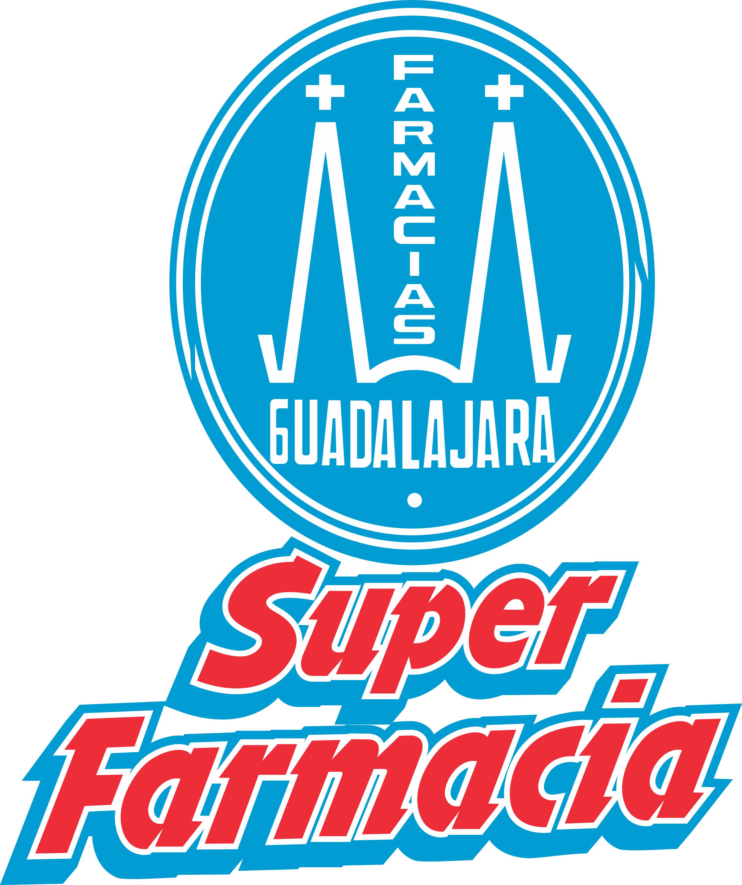

Rolando's Curriculm Vite
Personal Objectives
As a self-taught person, I apply my curiosity and initiative to drive innovation and efficiency in the company’s technological processes. My goal is to contribute to organizational success through creative and collaborative solutions. In addition, I seek to foster an environment of continuous learning and teamwork, where I can share my knowledge and skills with my colleagues.
-
Elementry School: Jose Vasocon suelos
Generation:
Address: Nuevo Laredo, Tamaulipas
-
Middle School: Cigarroa High School
Generation: 2009
Address: Laredo, Tx
- High School: Lyondon B. Jhonson
Generation: 2013
Address: Laredo, Tx -
College: UTEL
Generation: 2023-2025
Degree: I'm Currently studying
Address: Calzada de la Naranja #159, Naucalpan, Estado de Méxic
Education
Work Experience
-
Company: Victoria's Catering
Charge: Bartender
Salary: $800.00 USD
Years: 2009-2013
Address: Laredo, Texas
Responsibilities: Waiter -

Company: Super Farmacia Guadalajara
Charge: Cashier Supervisor
Salary: $5,000 MXN
Years: 2013-2015
Address: Fraccionamiento Los Encinos
Responsibilities: Cashier and Managing Personnel -
Company: Ryder Solutions
Charge: Logistics Coordinator
Salary: $13,000 MXN
Years: 2016-2019
Address: Plaza La Quinta
Responsibilities: Logistics Coordinator -
Company: Expeditors International
Charge: Track & Trace Lead
Salary: $20,000 MXN
Years: 2022 - Present
Address: Plaza La Quinta
Responsibilities: Border Crossing and Managing Personnel
Skills
- Visual Basic: Beginner
- Lenguage Program: C#
- Lenguage Program: Python Beginner
- Lenguage Program: SQL Beginner
- Manage Personal
- Logistics Coordinador
Awards
- Employe fo the Month: Expeditors 2023